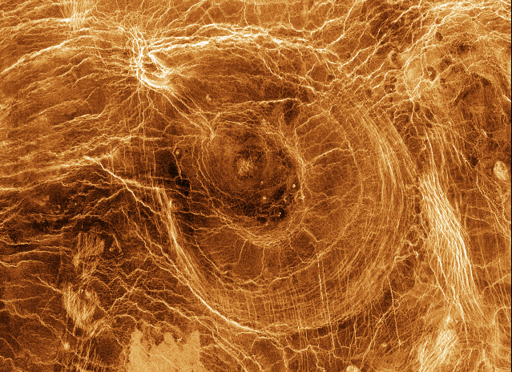
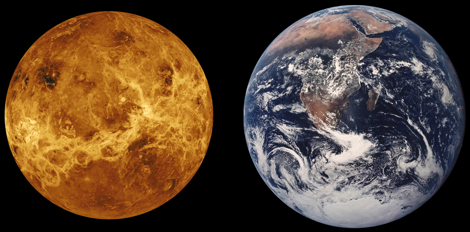

Venus es el segundo planeta del sistema solar en orden de proximidad al Sol y el tercero más pequeño después de Mercurio y Marte. Al igual que Mercurio, carece de satélites naturales. Recibe su nombre en honor a Venus, la diosa romana del amor (en la Antigua Grecia, Afrodita). Al ser el segundo objeto natural más brillante después de la Luna, puede ser visto en un cielo nocturno despejado a simple vista. Aparece al despuntar el día y al atardecer. Debido a las distancias de las órbitas de Venus y la Tierra desde el Sol, Venus nunca es visible más de tres horas antes del amanecer o tres horas después del ocaso.[1
Se trata de un planeta interior de tipo rocoso y terrestre, llamado con frecuencia el planeta hermano de la Tierra, ya que ambos son similares en cuanto a tamaño, masa y composición, aunque totalmente diferentes en cuestiones térmicas y atmosféricas (la temperatura media de Venus es de 463.85 °C). Su órbita es una elipse con una excentricidad de menos del 1 %, formando la órbita más circular de todos los planetas; apenas supera la de Neptuno. Su presión atmosférica es 90 veces superior a la terrestre; es, por lo tanto, la mayor presión atmosférica de todos los planetas rocosos del sistema solar. Es de color amarillento debido a su atmósfera, que está compuesta en su mayoría por dióxido de carbono (CO2), ácido sulfhídrico (H2S) y nitrógeno (N2).
Pese a situarse más lejos del Sol que Mercurio, Venus posee la atmósfera más caliente del sistema solar; esto se debe a que está principalmente compuesta por gases de efecto invernadero, como el dióxido de carbono, atrapando mucho más calor del Sol. Actualmente carece de agua líquida y sus condiciones en superficie se consideran incompatibles con la vida conocida, aunque en descubrimientos recientes se ha encontrado fosfina en su superficie nebular, una molécula que en la Tierra es generada por microbios, lo que da indicios de una posible existencia de vida.[2] No obstante, el Instituto Goddard de Estudios Espaciales de la NASA y otros han postulado que en el pasado Venus pudo tener océanos con tanta agua como el terrestre[6] y reunir condiciones de habitabilidad planetaria.
Características orbitales

Aunque todas las órbitas planetarias son elípticas, la órbita de Venus es la más parecida a una circunferencia, con una excentricidad inferior a un 1.2 %.
El ciclo entre dos elongaciones máximas (período orbital sinódico) dura 584 días. Después de esos 584 días Venus aparece en una posición a 72° de la elongación anterior. Dado que hay cinco períodos de 72° en una circunferencia, Venus regresa al mismo punto del cielo cada ocho años (menos dos días correspondientes a los años bisiestos). Este periodo era conocido como el ciclo Sotis en el Antiguo Egipto.
En la conjunción inferior, Venus puede aproximarse a la Tierra más que ningún otro planeta. El 16 de diciembre de 1850 alcanzó la distancia más cercana a la Tierra desde el año 1800, con un valor de 39 514 827 kilómetros (0.26413854 UA). Desde entonces nunca ha habido una aproximación tan cercana. Una aproximación casi tan cercana será en el año 2101, cuando Venus alcanzará una distancia de 39 541 578 kilómetros.
Rotación
Venus gira sobre sí mismo muy lentamente en un movimiento retrógrado, en el mismo sentido de las manecillas del reloj si se toma como referencia el polo norte, de este a oeste en lugar de oeste a este como el resto de los planetas (excepto Urano, que está muy inclinado), tardando en hacer un giro completo sobre sí mismo 243.187 días terrestres. No se sabe el porqué de la peculiar rotación de Venus. Si el Sol pudiese verse desde la superficie de Venus aparecería subiendo desde el oeste y posándose por el este, con un ciclo día-noche de 116.75 días terrestres[10] y un año venusiano de menos de un día estelar (0.92 días estelares venusianos).
Además de la rotación retrógrada, los periodos orbital y de rotación de Venus están sincronizados de manera que siempre presenta la misma cara del planeta a la Tierra cuando ambos cuerpos están a menor distancia. Esto podría ser una simple coincidencia pero existen especulaciones sobre un posible origen de esta sincronización como resultado de efectos de marea afectando a la rotación de Venus cuando ambos cuerpos están lo suficientemente cerca.
Movimiento retrógrado
Es en dirección Este, dura 6 semanas y su momento intermedio es la conjunción inferior. Por tanto se inicia 3 semanas antes de la conjunción inferior abarcando las 3 últimas semanas de un ciclo sinódico y concluye 3 semanas después de la conjunción abarcando las 3 primeras del siguiente. En el resto del ciclo sinódico Venus parece ir en línea recta hacia el Este durante 77 semanas y el momento intermedio es la conjunción superior. La suma de las 6 y las 77 semanas completan las 83 del ciclo sinódico. Este patrón se repite cada 83 semanas (584 días) hasta 5 veces en 8 años (acorde a las 5 conjunciones inferiores en 8 años). Es el efecto de que Venus —que se traslada más rápido que la Tierra— va en la misma dirección que la Tierra. La forma del trazo retrógrado es resultado de la suma del movimiento propio de Venus y del de traslación de la Tierra, y cada uno de los cinco es diferente porque depende del tramo de órbita por el que circule Venus ya que su órbita está inclinada y tiene dos tramos superior e inferior y cada uno un tramo ascendente y descendente. Así, aunque nos parecen movimientos desordenados son el efecto de que observamos de un punto de vista subjetivo y móvil (la Tierra) en una región espacial en la que ambos planetas siguen movimientos circulares a sus velocidades constantes marcando patrones regulares en el tiempo.
Características físicas

Atmósfera de Venus
Venus tiene una densa atmósfera, compuesta en su mayor parte por dióxido de carbono y una pequeña cantidad de nitrógeno.[12] La presión a nivel de la superficie es noventa veces superior a la presión atmosférica en la superficie terrestre (una presión equivalente en la Tierra a la presión que hay sumergido en el agua a una profundidad de un kilómetro). La enorme cantidad de dióxido de carbono de la atmósfera provoca un fuerte efecto invernadero que eleva la temperatura de la superficie del planeta hasta cerca de 464 °C en las regiones menos elevadas cerca del ecuador. Esto hace que Venus sea más caliente que Mercurio, a pesar de hallarse a más del doble de la distancia del Sol que este y de recibir solo el 25 % de su radiación solar (2613.9 W/m² en la atmósfera superior y 1071.1 W/m² en la superficie). Debido a la inercia térmica de su masiva atmósfera y al transporte de calor por los fuertes vientos de su atmósfera, la temperatura no varía de forma significativa entre el día y la noche. A pesar de la lenta rotación de Venus (menos de una rotacion por año venusiano, equivalente a una velocidad de rotación en el Ecuador de solo 6.5 km/h), los vientos de la atmósfera superior circunvalan el planeta en un intervalo de solo 4 días, distribuyendo eficazmente el calor. Además del movimiento zonal de la atmósfera de oeste a este, hay un movimiento vertical en forma de célula de Hadley que transporta el calor del ecuador hasta las zonas polares e incluso a latitudes medias del lado no iluminado del planeta.
La radiación solar casi no alcanza la superficie del planeta. La densa capa de nubes refleja al espacio la mayoría de la luz del Sol y la mayor parte de la luz que atraviesa las nubes es absorbida por la atmósfera. Esto impide a la mayor parte de la luz del Sol que caliente la superficie. El albedo bolométrico de Venus es de aproximadamente el 60 %, y su albedo visual es aún mayor, lo cual concluye que, a pesar de encontrarse más cercano al Sol que la Tierra, la superficie de Venus no se calienta ni se ilumina como era de esperar por la radiación solar que recibe. En ausencia del efecto invernadero, la temperatura en la superficie de Venus podría ser similar a la de la Tierra. El enorme efecto invernadero asociado a la inmensa cantidad de dióxido de carbono en la atmósfera atrapa el calor provocando las elevadas temperaturas de este planeta.
Los fuertes vientos en la parte superior de las nubes pueden alcanzar los 350 km/h, aunque a nivel del suelo los vientos son mucho más lentos. A pesar de ello, y debido a la altísima densidad de la atmósfera en la superficie de Venus, incluso estos flojos vientos ejercen una fuerza considerable contra los obstáculos. Las nubes están compuestas principalmente por gotas de dióxido de azufre y ácido sulfúrico, y cubren el planeta por completo, ocultando la mayor parte de los detalles de la superficie a la observación externa. La temperatura en la parte superior de las nubes (a 70 km sobre la superficie) es de −45 °C. La medida promedio de temperatura en la superficie de Venus es de 464 °C. La temperatura de la superficie nunca baja de los 400 °C, lo que lo hace el planeta más caliente del sistema solar.